▲ 좌구산 명상구름다리. 사진 속 숲은 초록이어서 10월 현장 모습과 다를 수 있고, 촬영 시기는 확인하지 못했다. 사진=한국관광공사
"별 보러 갔는데 월요일이라 닫혔다면?" 충북 증평 좌구산천문대는 증평군 공식 누리집 기준 매주 월요일 휴관이고, 4~10월에는 10:00~22:00(20:30까지 입장) 운영하며 일반관람은 1시간 30분짜리 가이드 투어로 진행된다. 개인 관람료는 일반 5,000원이고, 증평군은 "사전 예약 후 관람"을 안내하면서 "잔여자리가 있을 경우 현장에서 매표 후 입장 가능"이라고 적어 두었다. 이 글은 증평군 좌구산천문대 누리집(관람안내·관람요금·운영프로그램·공지사항), 증평군 문화관광 누리집, 한국관광공사 TourAPI를 2026년 10월 10일에 직접 열어 확인한 값만 정리했다. 확인하지 못한 항목은 "확인하지 못했다"고 그대로 적었다.
💡 먼저 결론
천문대는 월요일 휴관(10월에는 12일·19일·26일)이고 예약은 네이버 예약으로 받는다. 같은 휴양림 안의 좌구산 명상구름다리(길이 230m)는 TourAPI에 하절기 09:00~19:00로 올라 있지만 휴양림 입장료·주차료는 공식 안내에서 확인하지 못했다. 그래서 요금은 천문대·체험시설처럼 공식 표가 있는 값만 실었다. 좌구산천문대 누리집 바로가기
1. 한눈에 보기 — 확인한 것과 확인하지 못한 것
좌구산천문대(증평읍 솟점말길 187)와 좌구산 자연휴양림(솟점말길 107)은 같은 좌구산 자락에 있고, 증평군 누리집은 둘을 "좌구산휴양랜드"로 묶어 운영한다. 아래 표는 항목별 근거와 상태를 구분한 것이다.
| 항목 | 확인된 값 | 출처·상태 |
|---|---|---|
| 천문대 운영 시간 | 4~10월 10:00~22:00(20:30 입장 마감), 11~3월 10:00~21:00(19:30 입장 마감) | 증평군 좌구산천문대 '관람안내' |
| 천문대 휴게시간 | 하절기 12:00~13:00·17:30~19:30, 동절기 12:00~13:00·17:00~19:00(관람 회차 없는 시간대) | TourAPI(수정일 2026-06-22) |
| 천문대 휴관 | 매주 월요일, 1월 1일, 설·추석 연휴. 월요일이 법정공휴일이면 다음 날 휴관 | 같은 페이지 |
| 천문대 예약 | 사전 예약 권장, 잔여 자리가 있으면 현장 매표 가능 | 같은 페이지·네이버 예약 링크 |
| 천문대 관람료 | 개인 일반 5,000원·아동·청소년 4,000원·유아 1,000원 | '관람요금' 페이지 |
| 천문대 주차 | 주차 가능(TourAPI). 주차 요금·대수는 공식 안내를 확인하지 못했다 | TourAPI(수정일 2026-06-22) |
| 휴양림 개방 | 연중무휴(TourAPI). 입장료·주차료는 공식 안내를 확인하지 못했다 | TourAPI(수정일 2026-06-25) |
| 명상구름다리 | 하절기 09:00~19:00, 동절기 09:00~18:00. 우천·강풍·강설·관리 사정 시 미개장 | TourAPI(수정일 2026-06-22) |
| 최신 공지 | 10월 3~5일 정상 운영, 10월 6일 휴관(개천절 연휴, 가상체험장 동일). 9월 24~26일 추석 연휴 휴관은 종료. 천체투영실 공사(8월 1일~9월 11일)에 따른 임시 운영 공지는 종료 예정일이 지남 | 천문대 공지사항(2026-07-01·09-11·09-30 등록) |
| 단풍·관측 조건 | 날짜·시야 예측은 공식 자료에서 확인하지 못했다 | - |
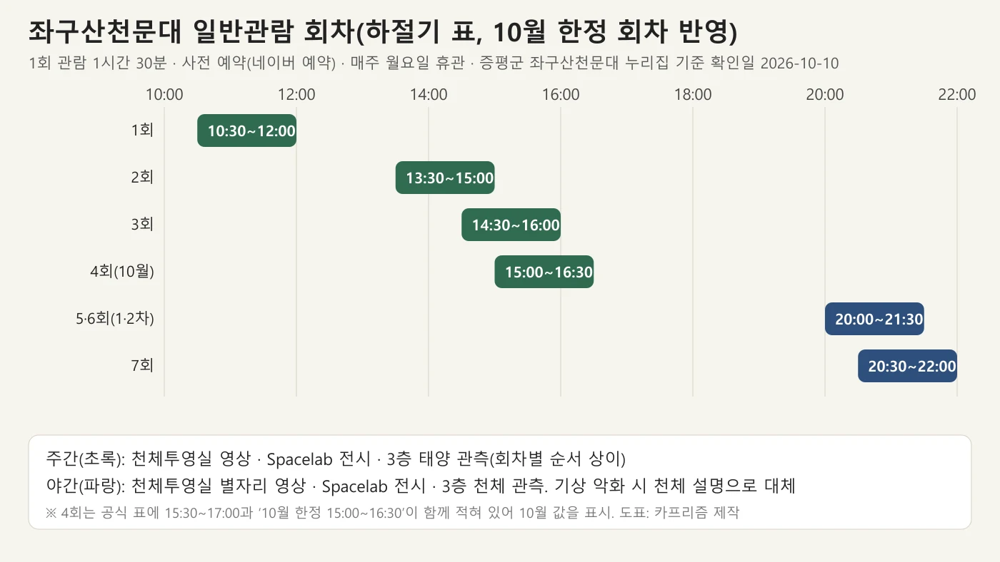
▲ 좌구산천문대 일반관람 회차 도표(증평군 누리집 표 기준, 확인일 2026-10-10). 사진=카프리즘 제작
2. 좌구산천문대 — 개방 시간·휴관·예약
TourAPI 소개에 따르면 좌구산(657m)에 있는 증평좌구산천문대는 한남금북정맥 일대의 최고봉에 자리 잡아 광공해가 적고, 밤에는 5등급의 희미한 별 약 1,500여 개를 헤아릴 수 있다고 한다. 증평군 누리집은 국내에서 가장 큰 356mm 굴절망원경이 설치돼 있다고 소개하고, 천체투영실 덕분에 날씨와 상관없이 천문 콘텐츠를 볼 수 있다고 안내한다. 개관은 2013년 9월 5일이다. 이 소개문의 "국내 최대"는 증평군 자체 설명이다. 독립 출처로는 2013년 9월 6일자 서울신문이 개관 소식과 함께 "군은 내년 4월에 국내 최대의 356㎜ 굴절망원경을 주관측실에 설치할 예정"이라고 전한 것이 전부였고, 이 역시 군 발표를 옮긴 설치 예정 보도라 지금도 국내 최대인지는 한국천문연구원 등 별도 자료로 확인하지 못했다.
| 항목 | 내용 | 근거 |
|---|---|---|
| 주소 | 충북 증평군 증평읍 솟점말길 187 | 천문대 누리집 '오시는길' |
| 운영 시간 | 4~10월 10:00~22:00(입장 20:30까지), 11~3월 10:00~21:00(입장 19:30까지) | '관람안내' |
| 휴관일 | 매주 월요일 / 1월 1일 / 설·추석 연휴 / 월요일이 법정공휴일이면 다음 날 | '관람안내' |
| 예약 | 사전 예약 후 관람 안내. 잔여 자리가 있으면 현장 매표 후 입장 가능 | '관람안내' |
| 문의 | 043-835-4571~5(대표). 일반관람 일정은 홈페이지 예약 기준 | '관람안내' |
| 관람 형태 | 관람 시간에 맞춘 가이드 투어, 1회 1시간 30분 | '운영프로그램 안내' |
TourAPI에는 휴게시간도 적혀 있다. 하절기는 12:00~13:00과 17:30~19:30, 동절기는 12:00~13:00과 17:00~19:00이며, 일반관람 회차표에서도 이 시간대에는 회차가 없다. 즉 4~10월의 '20:30 입장 마감'은 마지막 야간 회차(20:30 시작)에 맞춘 값이고, 17:30~19:30에는 관람이 열리지 않는다. 입장 마감 시각은 천문대 누리집 '관람안내'와 회차표가 모두 하절기 20:30·동절기 19:30으로 일치한다. 다만 증평군 문화관광 누리집의 '좌구산 천문대' 소개에는 동절기가 \"20:00까지 입장\"으로 적혀 있어 같은 군 누리집끼리도 값이 다르며, 이 글은 천문대 누리집 값(19:30)을 따랐다. 오늘(10월 10일)은 하절기 기간이라 20:30 입장 마감이 맞고, 11월 1일부터는 19:30으로 앞당겨진다.
10월 휴관일은 요일로 계산하면 월요일인 10월 12일·19일·26일이다. 공지사항에는 개천절 연휴인 10월 3일(토)~5일(월)은 정상 운영하고 6일(화)에 휴관한다는 안내가 올라와 있었다. 이 연휴는 이미 지났고, 이후 월요일이 법정공휴일인 날은 10월에 없어 별도 휴관 변경은 공지에서 확인하지 못했다. 공지는 휴관 사유를 적지 않았지만, 10월 3일이 토요일이라 개천절 대체공휴일이 10월 5일(월)에 생기고 \"월요일이 법정공휴일인 경우 다음날 휴관\" 규정에 따라 6일(화)이 쉬는 것으로 읽힌다. 11월 이후 변경은 공지사항을 다시 보는 것이 안전하다. 참고로 7월 1일 공지에 따라 천체투영실 공사로 8월 1일~9월 11일에는 임시 회차(1회 1시간)와 관람료 50% 적용이 있었으나, 종료 예정일이 지났고 이후 연장 공지는 공지사항 1쪽에서 찾지 못했다.
✅ 예약은 이렇게 확인하자
누리집 첫 화면에는 "네이버 예약을 통해 예약하실 수 있습니다"라는 문구와 천문대·가상체험장 예약 바로가기가 있다. 예약 시간과 회차가 겹치는 날에는 당일 잔여 자리가 남아 있는지 전화(043-835-4571~5)로 먼저 확인하자. 네이버 예약 바로가기
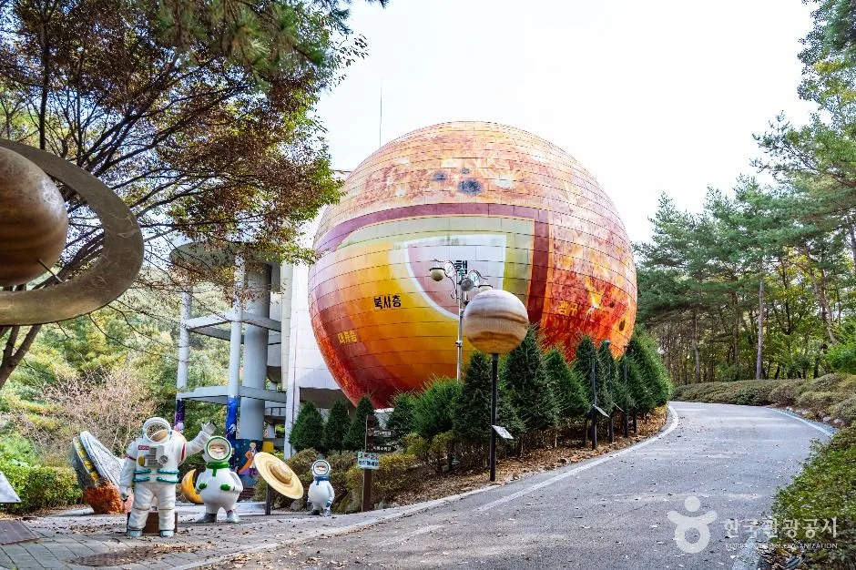
▲ 천문대 건물 주변 진입로. 구 형태의 건물이 눈에 띈다. 촬영 시기는 확인하지 못했다. 사진=한국관광공사
3. 일반관람 회차표 — 낮 4회, 밤 3회
증평군 누리집의 '운영프로그램 안내'에는 하절기(4~10월)와 동절기(11~3월) 일반관람 일정표가 따로 있다. 하절기 표의 4회는 15:30~17:00과 "15:00~16:30(10월 한정)"이 함께 적혀 있어, 10월 방문이라면 15:00 시작으로 읽는 것이 맞아 보인다. 5회(16:00~17:30)는 4~8월 한정이라 10월에는 없다. 정확한 회차는 예약 화면에서 확인해야 한다.
| 구분 | 회차 | 관람 시간(1시간 30분) | 진행 순서 |
|---|---|---|---|
| 오전 | 1회 | 10:30~12:00 | 1층 천체투영실 영상 → 2층 Spacelab 전시 → 3층 태양 관측 |
| 오후 | 2회 | 13:30~15:00 | 3층 태양 관측 → 2층 Spacelab 전시 → 1층 천체투영실 영상 |
| 오후 | 3회 | 14:30~16:00 | 위와 같음 |
| 오후 | 4회 | 15:30~17:00(10월 한정 15:00~16:30) | 위와 같음 |
| 오후 | 5회 | 16:00~17:30(4~8월 한정) | 10월에는 해당 없음 |
| 야간 | 5·6회(1차/2차) | 20:00~21:30 | 1층 천체투영실 영상 → 2층 전시 → 3층 천체 관측 |
| 야간 | 7회 | 20:30~22:00 | 위와 같음 |
| 구분 | 회차 | 관람 시간(1시간 30분) |
|---|---|---|
| 오전 | 1회 | 10:30~12:00 |
| 오후 | 2회 | 13:30~15:00 |
| 오후 | 3회 | 14:30~16:00 |
| 오후 | 4회 | 15:00~16:30 |
| 야간 | 5·6회(1차/2차) | 19:00~20:30 |
| 야간 | 7회 | 19:30~21:00 |
공식 표에는 "관람권은 관람 시간 10분 전까지 매표소에서 발권하시기 바랍니다"라고 적혀 있다. 요금 페이지에는 관람권이 관람 시간 30분 전부터 발행되고 "예약하신 분의 성함을 확인하고 발매된다"고 되어 있다. 관람 시간이 지나면 관람료는 환불되지 않는다.
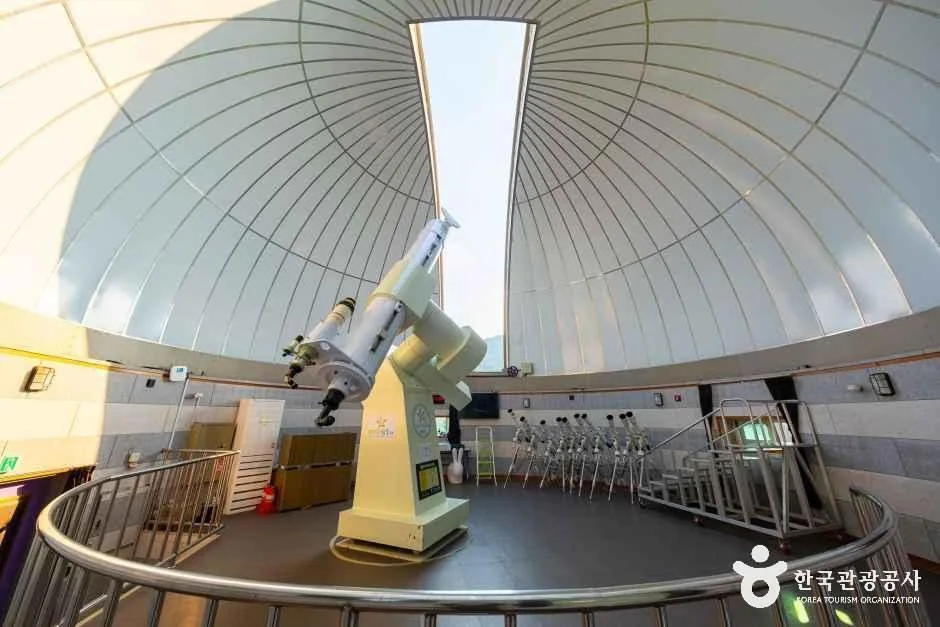
▲ 관측실 돔 안에 설치된 망원경. 촬영 시기는 확인하지 못했다. 사진=한국관광공사
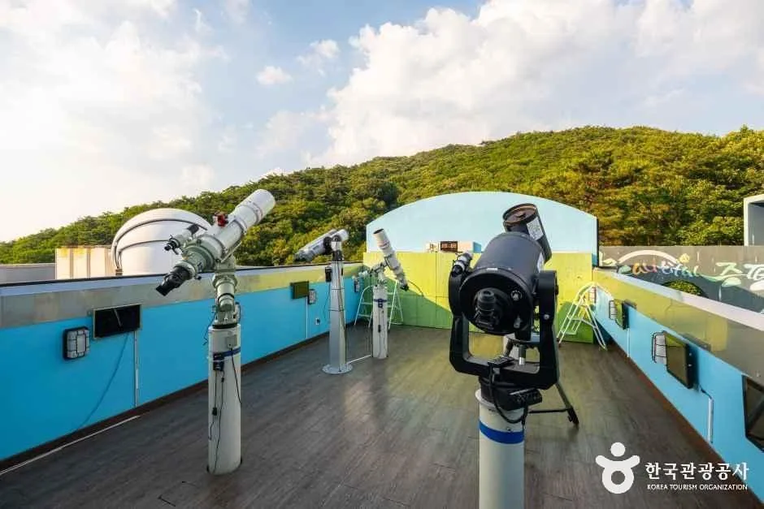
▲ 낮 시간대 야외 관측 공간의 망원경들. 주간에는 3층에서 태양 관측이 진행된다고 안내돼 있다. 사진=한국관광공사
4. 관람 요금·감면·꼭 알아둘 규칙
| 구분 | 일반(만 19세 이상) | 아동·청소년(만 7세 이상) | 유아(만 4세 이상) | 비고 |
|---|---|---|---|---|
| 개인 | 5,000 | 4,000 | 1,000 | - |
| 단체 | 4,000 | 3,000 | 500 | 20명 이상 |
같은 페이지의 감면 기준은 다음과 같다. 관람료는 중복 할인되지 않고, 할인 대상이면 관람권을 살 때 증빙서류를 내야 한다.
| 구분 | 대상 |
|---|---|
| 면제 | 경로(만 65세 이상), 국가유공자와 그 유족·참전유공자와 그 유족, 의상자·의사자 유족, 5·18민주유공자와 그 유족, 증평군 자원봉사종합센터 소속 봉사자(50시간 이상) |
| 50% 감면 | 증평군민, 증평군 소재 유치원·어린이집 아동과 초·중·고 학생, 현역병·의무경찰, 장애인과 동반보호자 1인, 생계급여수급자·한부모가족, 그린카드 결제자, 협약 단체 소속자, 괴산군·진천군·음성군 주민등록상 거주자 |
| 30% 감면 | 좌구산휴양랜드 숙박시설 사용자(숙소 정원에 한함), 가족친화인증기업·기관 임직원, 다자녀가정(미성년 자녀 2인 이상) |
⚠️ 입장 전에 지켜야 할 것(천문대 공식 유의사항)
· 천문대 내부에는 음식물을 가지고 입장할 수 없고, 반려동물도 동반할 수 없다.
· 만 4세 미만 영유아는 천체투영실에 입장할 수 없다.
· 음주자와 위험물 소지자는 입장할 수 없고, 미성년자는 성인 보호자 없이 입장할 수 없다.
· 천문대 주차장까지 대형버스(25인승 초과)는 운행할 수 없다.
· 미원 방면에서 진입하면 비포장도로이므로 율리 마을을 경유해 올라오라고 안내한다.
· 기상 악화로 태양·천체 관측이 어려우면 천체 설명으로 대체된다.
5. 밤 관측과 가족캠프 — 확인된 프로그램만
'관람내용' 표에 따르면 천체투영실은 각각 25분 진행이고 정원은 40명(제한적 운영)이다. 주간에는 천체 영상을, 야간에는 별자리 영상을 보여 준다. 천체 관측은 낮에 태양(흑점·홍염 등), 밤에 행성·달·별·성단·성운·은하 등을 주·보조 관측실에서 본다. 2층 Spacelab 전시실에서는 VR 체험, UFO 영상, 인공위성·로켓 시뮬레이션, 테슬라코일 등을 안내한다. 어떤 천체를 볼 수 있는지는 날짜마다 달라서, 누리집에 '이달의 관측대상' 메뉴가 따로 있다. 이번 달 자료가 올라와 있는지는 확인하지 못했다.
| 프로그램 | 대상·일정 | 요금 | 메모 |
|---|---|---|---|
| 일반관람 | 누구나, 화~일 1시간 30분 | 관람료(앞 표) | 홈페이지 예약 |
| 스타투어(가족캠프) 공식 요금표 | 만 4세 이상 | 3,000원(관람료 별도) | 요금 페이지 표기. 10월 캠프 요금은 아래 행의 첨부 파일 값 |
| 10월 '망원경 체험' 가족캠프 | 10월 10일(오늘)·31일 토요일 21:30~23:30, 8가족(4인 기준) | 어른 8,000원·학생 7,000원·유아 4,000원 | 소형 망원경 가족당 1기 제공 |
| 10월 '천체사진 촬영' 가족캠프 | 10월 3일(21:30~23:00, 종료)·17일(21:30~23:30) 토요일, 8가족 | 어른 10,000원·학생 9,000원·유아 6,000원(사진 1인 1장 인화 포함) | 후처리 뒤 집으로 발송 |
| 10월 '달사진 촬영' 가족캠프 | 10월 24일 토요일 21:30~23:30, 40명 | 어른 10,000원·학생 9,000원·유아 6,000원 | 사진 인화 1장 포함 |
| 천체캠프 | 초·중·고 단체 20~40명, 화~목 | 24,000원(만 7세 이상) | 사전 전화(043-835-4572) 협의 |
10월 가족캠프 요금·일정은 2026-09-30 공지의 한글(hwp) 첨부 파일을 직접 열어 확인한 값이다. 세 캠프 모두 네이버 예약, 월 1회만 예약 가능, 기상 악화 시 취소다. 캠프는 밤 21:30에 시작하므로 일반관람의 20:30 입장 마감과는 별개의 예약제로 운영된다. 숙박비·식비는 캠프 참가비에 포함되지 않는다. 숙소는 좌구산휴양랜드(foresttrip 숲나들e, 043-835-4551)에서, 식사는 별무리하우스 1층 은하수식당·매점(043-838-7453)에서 문의하라고 안내한다. 가상증강현실체험장(휴양림 안)은 10:00~12:00, 13:00~19:00(15:00~15:30 기계 점검)에 운영하고 VR룸 7,000원 등 별도 요금표가 있다. 휴관일은 시설 소개 페이지에 \"매주 월요일\"로 적혀 있으나, 2026년 1월 3일 공지는 \"수~일요일 운영, 월~화요일 휴관\"으로 바뀌었다고 안내하므로 화요일에도 쉬는 것으로 보고 네이버 예약 후 방문하자.
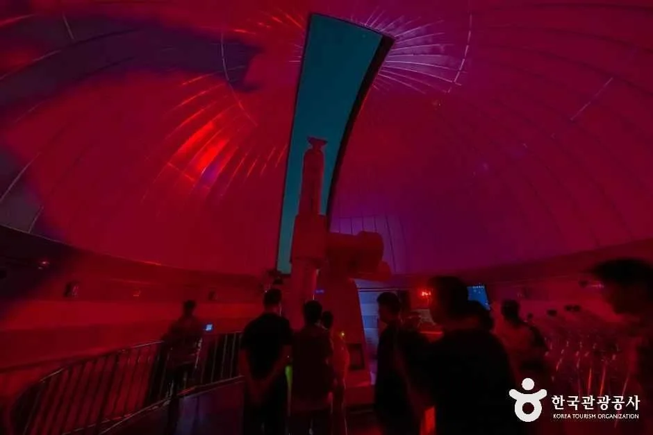
▲ 천문대 내부의 돔형 공간. 붉은 조명 아래 관람객 실루엣이 보인다. 촬영 시기는 확인하지 못했다. 사진=한국관광공사
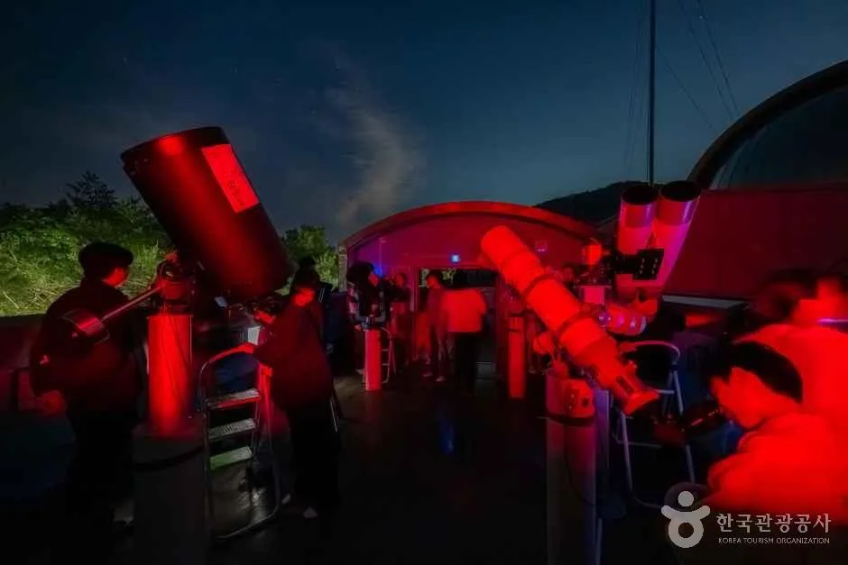
▲ 야간 관측 시간의 망원경들. 촬영 시기는 확인하지 못했다. 사진=한국관광공사
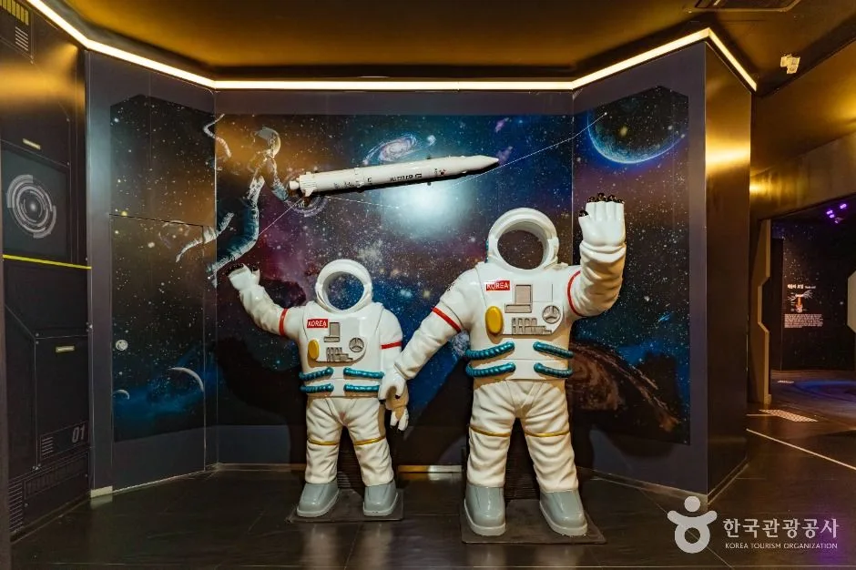
▲ 천문대 내부 전시 공간의 우주인 조형. 촬영 시기는 확인하지 못했다. 사진=한국관광공사
6. 좌구산 자연휴양림과 명상구름다리
TourAPI는 좌구산 자연휴양림이 한남금북정맥 최고봉 좌구산 자락에 있고, 숙박을 하지 않아도 숲 명상의 집·명상 구름다리·천문대가 있어 당일 여행지로도 적합하다고 소개한다. 개방은 연중무휴이고 주차는 가능하다고 되어 있다. 다만 당일 이용 입장료와 주차료는 공식 페이지에서 찾지 못했다. 증평군 문화관광 누리집의 휴양림 소개에는 숙박 이용 시간(당일 15:00~다음 날 12:00)과 "이용요금은 홈페이지 참조"만 적혀 있어, 가격은 숲나들e나 휴양랜드사업소(043-835-4551~3)에서 확인해야 한다.
| 시설 | 확인된 값 | 출처 |
|---|---|---|
| 좌구산 자연휴양림 | 연중무휴, 주차 가능. 숙박 입실 15:00·퇴실 12:00(야영장은 입실 13:00·퇴실 11:00). 입장료·주차료는 확인 못 함 | TourAPI·증평군 문화관광 |
| 좌구산 명상구름다리 | 길이 230m(출렁다리 구간 130m), 폭 2m, 높이 50m. 하절기 09:00~19:00, 동절기 09:00~18:00. 우천·강풍·강설·관리 사정 시 미개장. 하절기·동절기 구분일은 확인 못 함 | TourAPI(문의 043-835-4551) |
| 숲 명상의 집 | 09:00~12:00·13:00~17:00, 월요일 휴관. 산림치유 프로그램 2시간 10,000원(명상구름다리·거북바위정원·족욕·꽃차 시음·건강 측정) | 증평군 누리집 |
| 숲 해설 | 10·11·13·14·15시, 예약 없이 시간대별 운영, 1시간~1시간 30분, 무료(수변산책로·바람소리길·단풍나무길) | 증평군 누리집 |
| 산림레포츠 | 키즈코스(12종) 2,000원, 짚라인(78m) 개인 5,000원·단체 4,000원. 11~2월 운영 중지, 월·화 휴관 | 증평군 누리집 |
산림치유 프로그램은 매주 수요일 09:00에 6주차 화요일까지 예약을 받는다고 안내돼 있다. 명상구름다리는 TourAPI 소개에서 "깊은 협곡을 지나는 다리로 아찔함을 더해주어 증평의 최대 명소"로 손꼽힌다. 다리의 운영 시간이 계절별로 갈린다는 사실만 확인되고 정확한 전환일은 없으므로, 10월 말이나 11월 초 방문이라면 전화로 먼저 물어보는 편이 낫다.
▲ 좌구산 명상구름다리. 두 주탑 사이로 협곡을 가로지르는 모습이다. 촬영 시기는 확인하지 못했다. 사진=한국관광공사
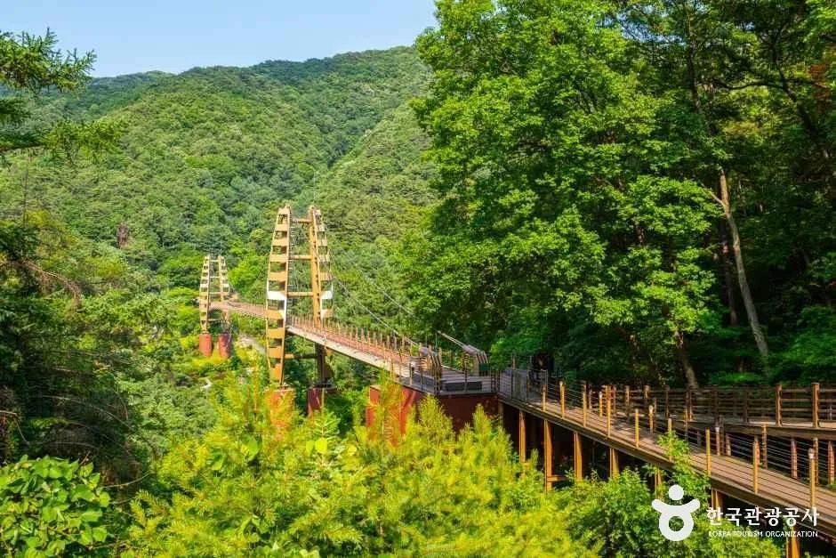
▲ 숲과 데크길 너머로 보이는 명상구름다리 일대. 촬영 시기는 확인하지 못했다. 사진=한국관광공사
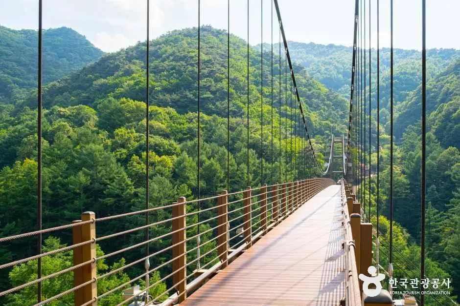
▲ 다리 위 통로. 난간과 케이블 너머로 산이 보인다. 촬영 시기는 확인하지 못했다. 사진=한국관광공사
7. 걷기길 — 거북이별 보러 가는 길과 비나리길
증평군 문화관광 누리집의 '증평둘레길' 소개에 따르면 "거북이별 보러 가는 길"은 율리삼거리에서 방고개 고갯마루까지 3.9km, 왕복 7.8km 구간이다. 산골 마을 율리의 전경과 좌구산의 산세를 보며 걷고, 고갯마루에는 2013년 개관한 좌구산천문대가 있다고 소개한다. 이 소개에는 소요 시간이 없어 싣지 않았다. 또 비나리길(율리휴양로 307)은 옛 분티 고갯길에 만든 산책로로 모두 1,008개의 계단이라고 안내한다. 계단을 내려가며 근심을 내려놓고 오르며 소망을 품자는 취지의 길이다.
| 길 | 확인된 정보 | 문의 |
|---|---|---|
| 거북이별 보러 가는 길 | 율리삼거리~방고개 고갯마루 3.9km(왕복 7.8km). 소요 시간은 확인 못 함 | 휴양랜드사업소 043-835-4551~5 |
| 비나리길 | 계단 1,008개. 길 끝에서 삼기저수지 전경. 소요 시간은 확인 못 함 | 043-835-4581·4583 |
| 숲 해설 코스 | 수변산책로·바람소리길·단풍나무길(숲 해설 신청 시) | 043-835-4595~8 |
▲ 휴양림 안내 사진의 하트 모양 조형물 쉼터. 정확한 위치는 공식 안내를 확인하지 못했다. 사진=한국관광공사
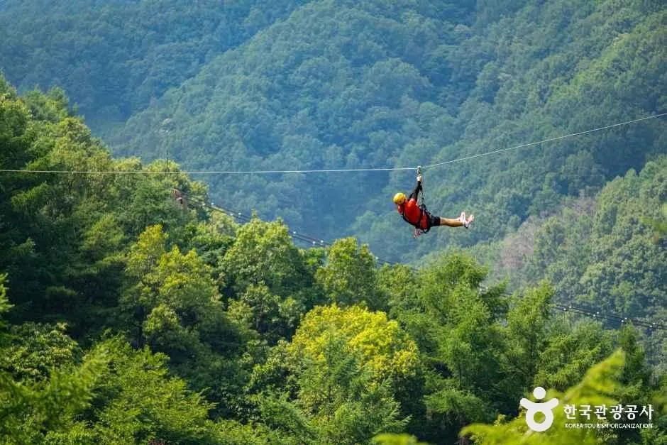
▲ 짚라인 체험 모습. 공식 안내에 따르면 11~2월에는 운영하지 않는다. 사진=한국관광공사
8. 증평 인근 — 공식 소개로 확인되는 곳
증평군 문화관광 누리집의 소개에서 천문대와 같은 날 엮기 쉬운 곳만 추렸다. 모두 공식 소개 문구에서 확인되는 값이며, 운영 시간이 표기돼 있지 않은 곳은 비워 두었다.
| 장소 | 확인된 정보 | 문의 |
|---|---|---|
| 증평민속체험박물관(증평읍 둔덕길 89) | 3~10월 09:00~18:00, 11~2월 09:00~17:00, 월요일·1월 1일·설날·추석 휴관. 관람 무료, 체험비 별도. 2010년 6월 개관 | 043-835-4161 |
| 보강천 미루나무숲·생태공원(증평읍 송산리 649-45) | 보강천체육공원에서 출발해 습지를 걷고 징검다리를 건너 원점으로 돌아오는 총 2.7km. 개방 시간은 확인 못 함 | 증평군 축산산림과 043-835-3481~3486 |
| 율리 휴양촌(율리휴양로 287) | 숙박시설로 안내. 요금·운영은 확인 못 함 | 043-835-3877 |
월요일에는 천문대와 증평민속체험박물관이 함께 문을 닫으므로, 이 두 곳을 엮는다면 월요일은 피해야 한다. 보강천 쪽은 야간 조명을 밝힌 사진이 TourAPI에 올라 있으나 점등 시간과 시기는 공식 안내를 확인하지 못했다.
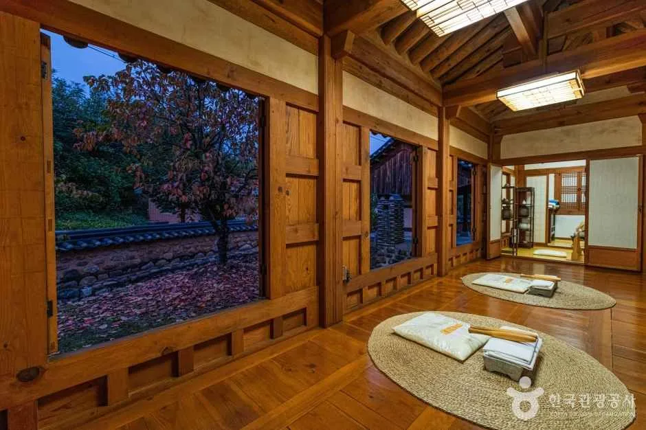
▲ 증평민속체험박물관 한옥 내부 모습. 촬영 시기는 확인하지 못했다. 사진=한국관광공사
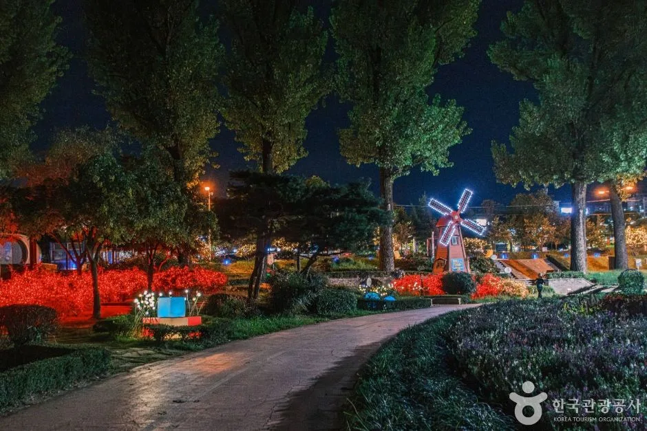
▲ TourAPI 보강천 미루나무숲 항목의 야간 사진. 풍차 조형과 꽃밭이 보이며 촬영 시기는 확인하지 못했다. 사진=한국관광공사
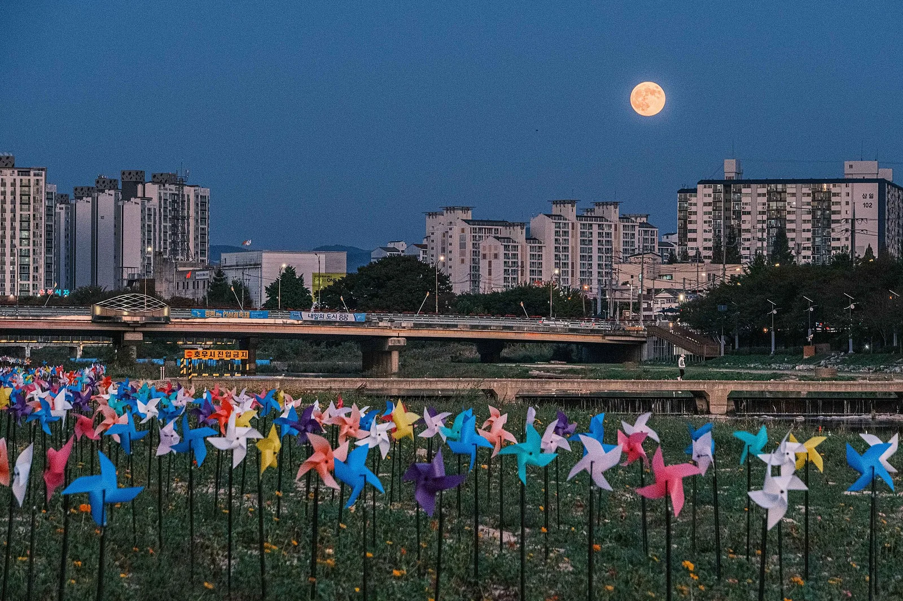
▲ 보름달이 뜬 저녁의 증평읍 하천변. 커먼즈에는 2024년 10월 촬영으로 기재돼 있으며, 하천명(보강천)은 확인하지 못했다. 사진=Kim Youngho(한국관광공사 공공누리 제1유형, 위키미디어 커먼즈)
9. 가는 길 — 천문대 누리집 안내 그대로
천문대 누리집 '오시는길'에는 자가용 경로가 아래처럼 안내돼 있다. 표기 소요 시간은 누리집 값을 그대로 옮긴 것이고, 실제 도로 상황에 따른 변동은 확인하지 못했다. 버스 노선은 이 페이지에 없었다.
| 출발 | 경로 | 누리집 표기 소요 |
|---|---|---|
| 서울 | 중부고속도로 → 증평IC → 증천삼거리 → 율리삼거리 → 좌구산자연휴양림 → 천문대 | 1시간 30분 |
| 대전 | 중부고속도로 → 증평IC → 증천삼거리 → 율리삼거리 → 좌구산자연휴양림 → 천문대 | 1시간 |
| 대구 | 경부고속도로 → 대전 → 중부고속도로 → 증평IC → … → 천문대 | 2시간 |
| 부산 | 경부고속도로 → 대전 → 중부고속도로 → 증평IC → … → 천문대 | 4시간 |
| 광주 | 호남고속도로 → 논산 → 호남고속도로 지선 → 대전 → 중부고속도로 → 증평IC → … → 천문대 | 3시간 30분 |
10. 출발 전 주의 — 월요일·예약·날씨·산불철
- 월요일 휴관: 천문대와 증평민속체험박물관, 숲 명상의 집이 월요일에 쉰다. 10월 12일·19일·26일이 해당한다. 가상증강현실체험장은 월·화요일 휴관으로 공지돼 있다(2026-01-03).
- 예약: 일반관람은 홈페이지(네이버 예약)로 받고, 가족캠프는 월 1회만 예약 가능하다.
- 날씨: 기상 악화로 관측이 어려우면 천체 설명으로 대체된다. 명상구름다리는 우천·강풍·강설 시 열지 않는다.
- 산불조심기간: 2026년 가을철 산불조심기간 공고는 확인하지 못했다. 참고로 2025년은 10월 20일~12월 15일이었고 지자체가 기간을 조정할 수 있다. 휴양림 둘레길을 걸을 계획이라면 증평군이나 휴양랜드사업소에 먼저 확인하자. 날짜 구분은 입산통제 날짜 정리 기사를 참고하자.
- 밤 운전: 미원 방면 진입로가 비포장이라는 공식 안내가 있으므로 어두워진 뒤에는 율리 마을을 경유하는 경로를 쓰자.
11. 같이 보면 좋은 카프리즘 기사
✅ 출발 전 체크리스트
· 월요일은 피하고, 네이버 예약으로 회차를 잡는다(4~10월 10:00~22:00, 20:30 입장 마감. 11월부터 19:30)
· 개인 관람료 일반 5,000원·아동·청소년 4,000원·유아 1,000원, 감면 증빙서류 지참
· 음식물·반려동물 반입 불가, 만 4세 미만은 천체투영실 입장 불가
· 휴양림 입장료·주차료는 휴양랜드사업소 043-835-4551~3에서 확인
· 명상구름다리는 우천·강풍 시 미개장
12. 정리
좌구산천문대는 4~10월 10:00~22:00(20:30 입장 마감), 매주 월요일 휴관이고 개인 관람료는 일반 5,000원이다. 일반관람은 1시간 30분 가이드 투어로 네이버 예약을 받으며, 잔여 자리가 있으면 현장 매표도 된다고 증평군이 안내한다.
휴양림 입장료·주차료, 명상구름다리의 하절기·동절기 전환일, 단풍 날짜와 걷기길 소요 시간은 공식 자료에서 확인하지 못해 싣지 않았다. 10월 12일·19일·26일은 월요일이라 천문대가 쉬고, 증평민속체험박물관도 함께 닫는다.